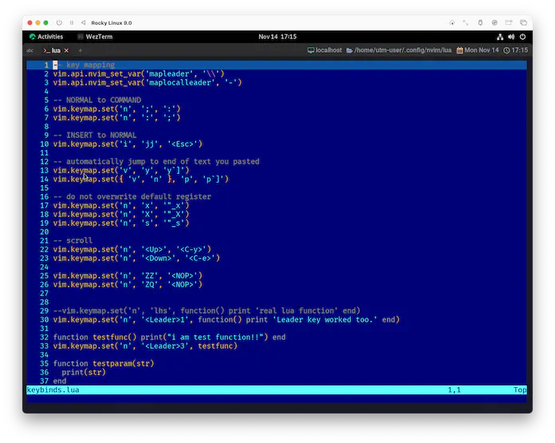
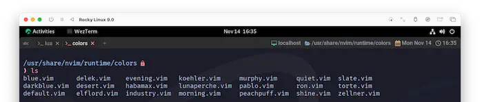

vim.cmd
この節はまたNeovimの方に寄せていきたいので、ヘルプから始めます😉
cmd({command}) vim.cmd()
Execute Vim script commands.
Note that `vim.cmd` can be indexed with a command name to return a
callable function to the command.
Vim スクリプトのコマンドを実行する。
コマンド名で `vim.cmd` をインデックス化すると、コマンドを呼び出すための関数を返すことに注意。
Parameters:
• {command} string|table Command(s) to execute. If a string, executes
multiple lines of Vim script at once. In this case, it is
an alias to |nvim_exec()|, where `output` is set to false.
Thus it works identical to |:source|. If a table, executes
a single command. In this case, it is an alias to
|nvim_cmd()| where `opts` is empty.
string|table 実行するコマンド。文字列の場合、Vim スクリプトの複数行を一度に実行する。
この場合は |nvim_exec()| のエイリアスで、`output` は false に設定される。
したがって、これは |:source| と同じように動作する。
テーブルの場合、1つのコマンドを実行する。この場合は |nvim_cmd()| のエイリアスで、`opts` は空である。
See also:
|ex-cmd-index|
これはサンプルがとっても豊富ですね☺️
Example:
vim.cmd('echo 42')
vim.cmd([[
augroup My_group
autocmd!
autocmd FileType c setlocal cindent
augroup END
]])
-- Ex command :echo "foo"
-- Note string literals need to be double quoted.
vim.cmd('echo "foo"')
vim.cmd { cmd = 'echo', args = { '"foo"' } }
vim.cmd.echo({ args = { '"foo"' } })
vim.cmd.echo('"foo"')
-- Ex command :write! myfile.txt
vim.cmd('write! myfile.txt')
vim.cmd { cmd = 'write', args = { "myfile.txt" }, bang = true }
vim.cmd.write { args = { "myfile.txt" }, bang = true }
vim.cmd.write { "myfile.txt", bang = true }
-- Ex command :colorscheme blue
vim.cmd('colorscheme blue')
vim.cmd.colorscheme('blue')
これは単純に:なんとかをコードから実行できる関数ですね。
こんなのを😮
:colorscheme blue
こんなのに😉
vim.cmd('colorscheme blue')
当然、キーマップに組み込むこともできます。
めっちゃブルーになりました😺
ちょっと寄り道 (colorscheme)
せっかくcolorschemeが出てきたので、少し寄り道していきます。
:colo :colorscheme E185
:colo[rscheme] {name} Load color scheme {name}.
This searches 'runtimepath' for the file "colors/{name}.(vim|lua)".
'runtimepath'を検索して、"colors/{name}.(vim|lua) "というファイルを探します。
color schemeファイルは、runtimepathの中のどこかにいるらしいので探してみると...、いました😆

blue.vim以外にも色々入ってます。
...とはいえ、ネット上を探せばもっといいやついっぱいありますけどね❗
Lua Function
さらに寄り道しちゃいますが、色々総合していくと、こんな書き方ができます。
vim.keymap.set('n', '<Leader>9', function() vim.cmd.colo 'blue' end)
colorschemeはcoloでもいいよーっていうのと、vim.cmd.coloみたいな書き方はヘルプにあったので、まあ良いじゃないですか❓
もう一個、なんでvim.cmd.colorscheme 'blue'が通るのかって言うと、
こっちはluaの仕様で、パラメータが一つしかない場合は()を省略して良いことになってます😉
見た目がシンプルになるので、わたしは積極的に使っていきたいタイプです。 この先でも、しれっとこんな記述をしていくので、よろしくどうぞ😆
vim.cmdについては、VimScriptのコマンドをコードから呼び出せるよー❗っていうことが理解できればOKです。
ここまでくると、結構いろいろなことがコードから実行できるって分かるので、楽しくなってきますね😆
VIM.CMD WILL RETURN
vim.cmd は帰ってくる